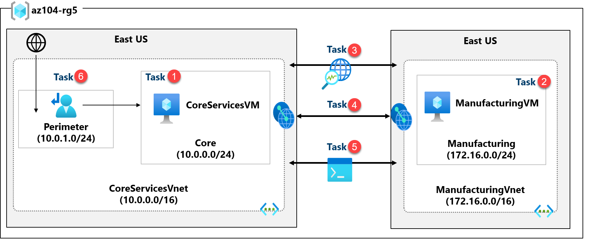
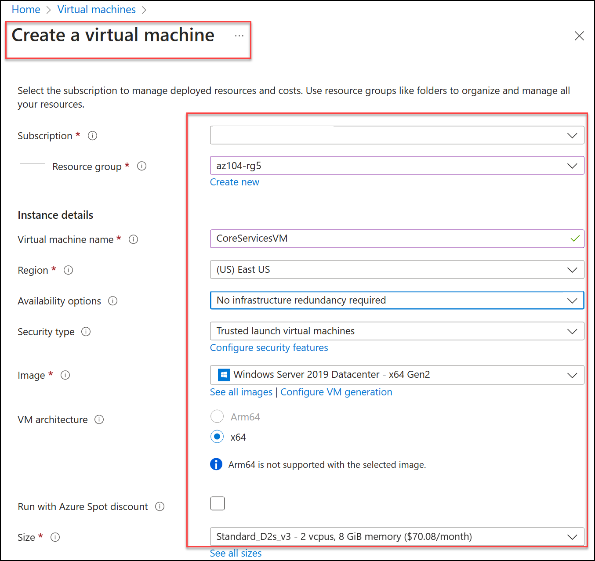
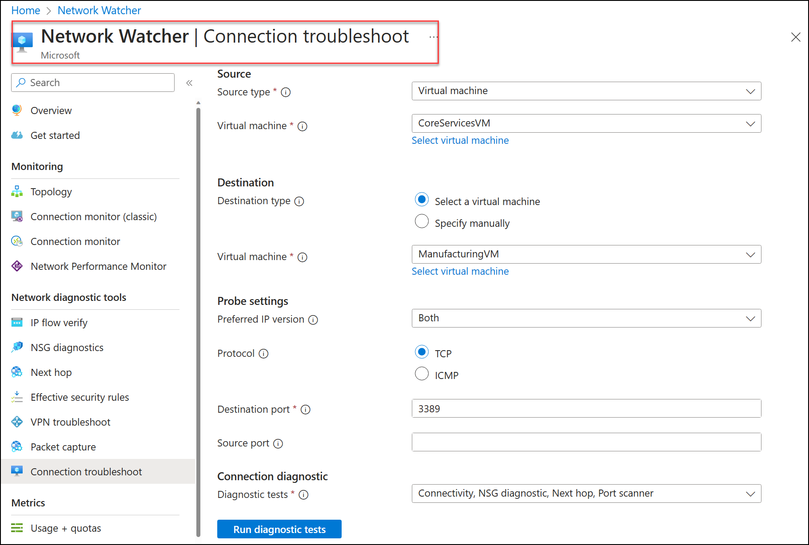
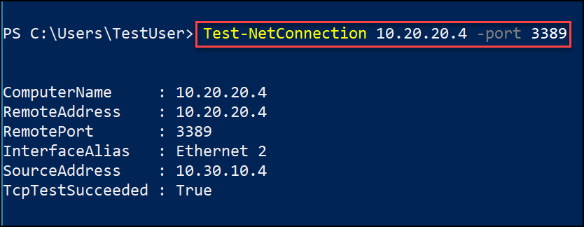

Lab - Implement Intersite Connectivity
Lab Introduction
In this lab you explore communication between virtual networks. You implement virtual network peering and test connections. You will also create a custom route.
This lab requires an Azure subscription. Your subscription type may affect the availability of features in this lab. You may change the region, but the steps are written using East US.
Estimated Time: 50 Minutes
Lab Scenario
Adamantus Technologies's segments core IT apps and services (such as DNS and security services) from other parts of the business, including your manufacturing department. However, in some scenarios, apps and services in the core area need to communicate with apps and services in the manufacturing area. In this lab, you configure connectivity between the segmented areas. This is a common scenario for separating production from development or separating one subsidiary from another.
Interactive Lab Simulations
There are several interactive lab simulations that you might find useful for this topic. The simulation lets you to click through a similar scenario at your own pace. There are differences between the interactive simulation and this lab, but many of the core concepts are the same. An Azure subscription is not required.
-
Connect two Azure virtual networks using global virtual network peering. Test the connection between two virtual machines in different virtual networks. Create a virtual network peering and retest.
-
Configure monitoring for virtual networks. Understand how to use Azure Network Watcher Connection Monitor, flow logs, NSG diagnostics, and packet capture to monitor connectivity across your Azure IaaS network resources.
-
Implement intersite connectivity. Run a template to create a virtual network infrastructure with several virtual machines. Configure virtual network peerings and test the connections.
Architecture Diagram

Job Skills
- Task 1: Create a virtual machine in a virtual network.
- Task 2: Create a virtual machine in a different virtual network.
- Task 3: Use Network Watcher to test the connection between virtual machines.
- Task 4: Configure virtual network peerings between different virtual networks.
- Task 5: Use Azure PowerShell to test the connection between virtual machines.
- Task 6: Create a custom route.
Task 1: Create a core services Virtual Machine and Virtual Network
In this task, you create a core services virtual network with a virtual machine.
-
Sign in to the Azure portal -
https://portal.azure.com. -
Search for and select
Virtual Machines. -
From the virtual machines page, select Create then select Azure Virtual Machine.
-
On the Basics tab, use the following information to complete the form, and then select Next: Disks >. For any setting not specified, leave the default value.
Setting Value Subscription your subscription Resource group az104-rg5(If necessary, Create new. )Virtual machine name CoreServicesVMRegion (US) East US Availability options No infrastructure redundancy required Security type Standard Image Windows Server 2019 Datacenter: x64 Gen2 (notice your other choices) Size Standard_DS2_v3 Username localadminPassword Provide a complex password Public inbound ports None 
-
On the Disks tab take the defaults and then select Next: Networking >.
-
On the Networking tab, for Virtual network, select Create new.
-
Use the following information to configure the virtual network, and then select Ok. If necessary, remove or replace the existing information.
Setting Value Name CoreServicesVnet(Create new)Address range 10.0.0.0/16Subnet Name CoreSubnet address range 10.0.0.0/24 -
Select the Monitoring tab. For Boot Diagnostics, select Disable.
-
Select Review + Create, and then select Create.
-
You do not need to wait for the resources to be created. Continue on to the next task.
Note: Did you notice in this task you created the virtual network as you created the virtual machine? You could also create the virtual network infrastructure then add the virtual machines.
Task 2: Create a virtual machine in a different virtual network
In this task, you create a manufacturing services virtual network with a virtual machine.
-
From the Azure portal, search for and navigate to Virtual Machines.
-
From the virtual machines page, select Create then select Azure Virtual Machine.
-
On the Basics tab, use the following information to complete the form, and then select Next: Disks >. For any setting not specified, leave the default value.
Setting Value Subscription your subscription Resource group az104-rg5Virtual machine name ManufacturingVMRegion (US) East US Security type Standard Availability options No infrastructure redundancy required Image Windows Server 2019 Datacenter: x64 Gen2 Size Standard_DS2_v3 Username localadminPassword Provide a complex password Public inbound ports None -
On the Disks tab take the defaults and then select Next: Networking >.
-
On the Networking tab, for Virtual network, select Create new.
-
Use the following information to configure the virtual network, and then select Ok. If necessary, remove or replace the existing address range.
Setting Value Name ManufacturingVnetAddress range 172.16.0.0/16Subnet Name ManufacturingSubnet address range 172.16.0.0/24 -
Select the Monitoring tab. For Boot Diagnostics, select Disable.
-
Select Review + Create, and then select Create.
Task 3: Use Network Watcher to Test the Connection between Virtual Machines
In this task, you verify that resources in peered virtual networks can communicate with each other. Network Watcher will be used to test the connection. Before continuing, ensure both virtual machines have been deployed and are running.
-
From the Azure portal, search for and select
Network Watcher. -
From Network Watcher, in the Network diagnostic tools menu, select Connection troubleshoot.
-
Use the following information to complete the fields on the Connection troubleshoot page.
Field Value Source type Virtual machine Virtual machine CoreServicesVM Destination type Virtual machine Virtual machine ManufacturingVM Preferred IP Version Both Protocol TCP Destination port 3389Source port Blank Diagnostic tests Defaults 
-
Select Run diagnostic tests.
Note: It may take a couple of minutes for the results to be returned. The screen selections will be greyed out while the results are being collected. Notice the Connectivity test shows UnReachable. This makes sense because the virtual machines are in different virtual networks.
Task 4: Configure Virtual Network Peerings between Virtual Networks
In this task, you create a virtual network peering to enable communications between resources in the virtual networks.
-
In the Azure portal, select the
CoreServicesVnetvirtual network. -
In CoreServicesVnet, under Settings, select Peerings.
-
On CoreServicesVnet | Peerings, select + Add. If not specified, take the default.
| Parameter | Value |
|---|---|
| Peering link name | CoreServicesVnet-to-ManufacturingVnet |
| Virtual network | ManufacturingVM-net (az104-rg5) |
| Allow ManufacturingVnet to access CoreServicesVnet | selected (default) |
| Allow ManufacturingVnet to receive forwarded traffic from CoreServicesVnet | selected |
| Peering link name | ManufacturingVnet-to-CoreServicesVnet |
| Allow CoreServicesVnet to access the peered virtual network | selected (default) |
| Allow CoreServicesVnet to receive forwarded traffic from the peered virtual network | selected |
-
In CoreServicesVnet | Peerings, verify that the CoreServicesVnet-to-ManufacturingVnet peering is listed. Refresh the page to ensure the Peering status is Connected.
-
Switch to the ManufacturingVnet and verify the ManufacturingVnet-to-CoreServicesVnet peering is listed. Ensure the Peering status is Connected. You may need to Refresh the page.
Task 5: Use Azure PowerShell to test the connection between Virtual Machines
In this task, you retest the connection between the virtual machines in different virtual networks.
Verify the Private IP Address of the CoreServicesVM
-
From the Azure portal, search for and select the
CoreServicesVMvirtual machine. -
On the Overview blade, in the Networking section, record the Private IP address of the machine. You need this information to test the connection.
Test the connection to the CoreServicesVM from the ManufacturingVM.
Did you know? There are many ways to check connections. In this task, you use Run command. You could also continue to use Network Watcher. Or you could use a Remote Desktop Connection to the access the virtual machine. Once connected, use test-connection. As you have time, give RDP a try.
-
Switch to the
ManufacturingVMvirtual machine. -
In the Operations blade, select the Run command blade.
-
Select RunPowerShellScript and run the Test-NetConnection command. Be sure to use the private IP address of the CoreServicesVM.
Powershell Test-NetConnection <CoreServicesVM private IP address> -port 33891. It may take a couple of minutes for the script to time out. The top of the page shows an informational message Script execution in progress. -
The test connection should succeed because peering has been configured. Your computer name and remote address in this graphic may be different.

Task 6: Create a custom route
In this task, you want to control network traffic between the perimeter subnet and the internal core services subnet. A virtual network appliance will be installed in the core services subnet and all traffic should be routed there.
-
Search for select the
CoreServicesVnet. -
Select Subnets and then + Create. Be sure to Save your changes.
Setting Value Name perimeterSubnet address range 10.0.1.0/24 -
In the Azure portal, search for and select
Route tables, and then select Create.Setting Value Subscription your subscription Resource group az104-rg5Region East US Name rt-CoreServicesPropagate gateway routes No -
After the route table deploys, select Go to resource.
-
Select Routes and then + Add. Create a route from a future Network Virtual Appliance (NVA) to the CoreServices virtual network.
Setting Value Route name PerimetertoCoreDestination type IP Addresses Destination IP addresses 10.0.0.0/16(core services virtual network)Next hop type Virtual appliance (notice your other choices) Next hop address 10.0.1.7(future NVA) -
Select + Add when the route is completed. The last thing to do is associate the route with the subnet.
-
Select Subnets and then Associate. Complete the configuration.
Setting Value Virtual network CoreServicesVnet Subnet Core
Note: You have created a user defined route to direct traffic from the DMZ to the new NVA.
Cleanup your Resources
If you are working with your own subscription take a minute to delete the lab resources. This will ensure resources are freed up and cost is minimized. The easiest way to delete the lab resources is to delete the lab resource group.
- In the Azure portal, select the resource group, select Delete the resource group, Enter resource group name, and then click Delete.
- Using Azure PowerShell,
Remove-AzResourceGroup -Name resourceGroupName. - Using the CLI,
az group delete --name resourceGroupName.
Key Takeaways
Congratulations on completing the lab. Here are the main takeaways for this lab.
- By default, resources in different virtual networks cannot communicate.
- Virtual network peering enables you to seamlessly connect two or more virtual networks in Azure.
- Peered virtual networks appear as one for connectivity purposes.
- The traffic between virtual machines in peered virtual networks uses the Microsoft backbone infrastructure.
- System defined routes are automatically created for each subnet in a virtual network. User-defined routes override or add to the default system routes.
- Azure Network Watcher provides a suite of tools to monitor, diagnose, and view metrics and logs for Azure IaaS resources.
Address: H-34, Ground Floor, Sector 63, Noida, Uttar Pradesh
Email: info@ceekh.com